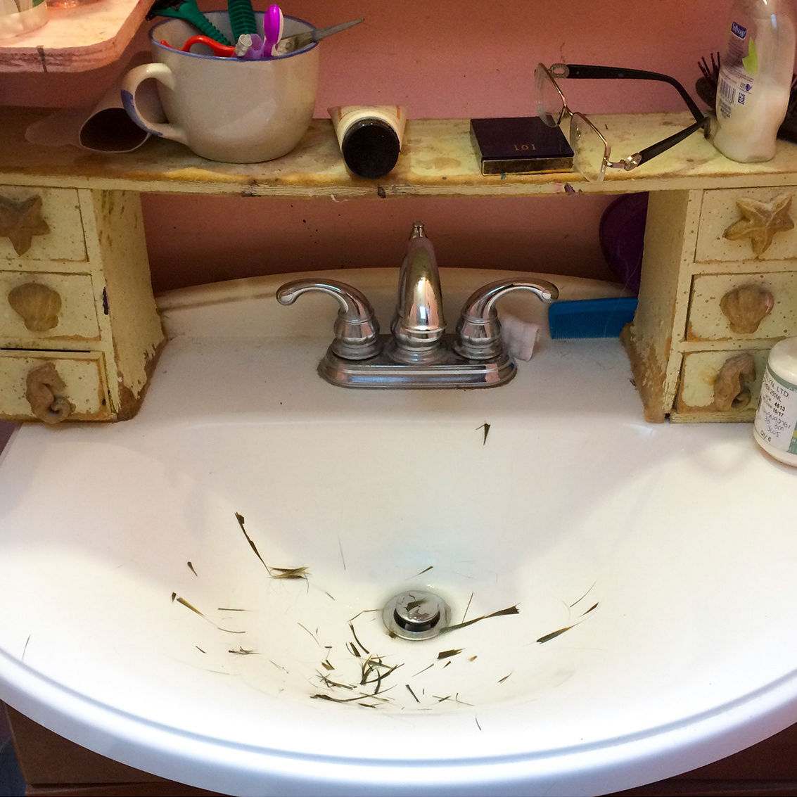

Info
Graphics
Photography
Doodles
Photography
Pity Party
A few shots from a series of photographs featuring a fur jacket made for a flat pattern class.

Gravesite
A photoshoot at a local cemetery featuring a hand dyed tulle dress and feather cowl made by Abby Sprague.

Phantasm
A pair of portraits from a shoot taken for a photography class.

Valentine
A couple shots from a narrative photography themed project created for a photography class.

Deadpan
Photographs taken in an attempt to mimic a flatter photographic style.

Personal
A few pieces from a project to document personal life over the course of a week.